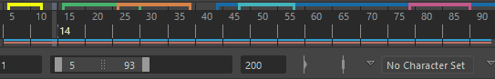

-
位于“动画”(Animation)菜单集 (F4) 中。
视口
- 创建可编辑的运动轨迹(Create Editable Motion Trail)
- 为当前对象创建运动拖尾。请参见创建可编辑的运动轨迹。
选择“可视化 > 创建可编辑的运动轨迹”(Visualize > Create Editable Motion Trail) >
 ，以设置“创建可编辑的运动轨迹”(Animate > Create Editable Motion Trail)选项。
，以设置“创建可编辑的运动轨迹”(Animate > Create Editable Motion Trail)选项。
- 创建转台(Create Turntable)
- 向场景中添加名为 turntableCameran 的转台摄影机。该摄影机会生成在“创建转台动画”(Create Turntable Animation)选项窗口的“帧数”(Number of Frames)字段中指定的帧数的转台动画。有关详细信息，请参见转台动画和创建转台动画。
选择“可视化 > 转台”(Visualize > Turntable) >
，以设置“动画转台”(Animation Turntable)选项。
- Blue Pencil
- 打开 Blue Pencil 工具栏，以便使用虚拟绘图工具在视口中绘制。使用 Blue Pencil 工具在视口中的帧上绘制，可以对帧进行分层、编辑、重定时和导出。请参见在视口中使用 Blue Pencil 进行绘制。
重影(Ghost)
- 打开重影编辑器(Open Ghosting Editor)
- 打开重影编辑器(Ghosting Editor)，您可以在其中管理场景中的所有重影。
- 为选定对象生成重影(Ghost Selected)
- 为所有选定对象启用重影。请参见为动画对象生成重影和为对象生成重影。
- 取消选定对象的重影(Unghost Selected)
- 为所有选定对象禁用重影。请参见为动画对象生成重影和取消对象的重影。
- 全部取消重影(Unghost All)
- 为场景中的所有对象关闭重影。
快照(Snapshot)
- 创建动画快照(Create Animation Snapshot)
- 为当前对象创建动画快照。请参见使用动画快照。
选择“可视化 > 创建动画快照”(Visualize > Create Animation Snapshot) >
，以设置“创建动画快照”(Create Animation Snapshot)选项。
- 更新快照(Update Snapshot)
- 重新计算场景中的运动轨迹和动画快照。
- 创建动画扫描(Create Animated Sweep)
- 创建选定对象的动画扫描。请参见使用动画扫描。
选择“可视化 > 创建动画快照”(Visualize > Create Animation Snapshot) >
，以设置“创建动画扫描”(Create Animated Sweep)选项。
时间滑块书签(Time Slider Bookmarks)
书签允许您使用彩色标记在时间滑块(Time Slider)上标记事件，以便可以及时注意某些时刻。当您想要聚焦或亮显场景中的特定区域或事件时，书签非常有用。
展开“时间滑块书签”(Time Slider Bookmarks)，查看以下选项：
- 创建(Create)

- 打开“创建书签”(Create Bookmark)对话框，以便将书签添加到选定帧。如果未选择任何帧，则会创建单帧书签，或者您可以在“开始”(Start)和“结束”(End)帧字段中输入书签范围。
- 热键：按 Alt (Option) + T 可打开创建时间滑块书签(Create Time Slider Bookmark)窗口。按 Alt (Option) + Shift + T 可打开“快速创建书签”(Quick Create Bookmark)，但不会打开“创建时间滑块书签”(Create Time Slider Bookmark)窗口。
- 编辑(Edit)
- 针对当前时间的书签，打开创建时间滑块书签(Create Time Slider Bookmark)窗口。（如果多个书签重叠，将选择顶部最新创建的书签。）
- 下一个书签
-

- 将当前时间设置为下一个书签的开始时间。
- 热键：'（撇号）
- 上一个书签
-
- 将当前时间设置为上一个书签的开始时间。
- 热键：;（分号）
- 框显书签(Frame Bookmark)

-

- 将播放范围设置为当前书签的开始和结束。（如果多个书签重叠，将选择顶部最新创建的书签。）
- 热键：|（竖线）
- 框显上一个书签(Frame Previous Bookmark)

- 在当前时间书签之前的书签上设置范围滑块(Range Slider)。
- 热键：:（冒号）
- 框显下一个书签(Frame Next Bookmark)
- 在当前时间书签之后的书签上设置范围滑块(Range Slider)。
- 热键："（引号）
- 取消框显(Unframe)
- 将播放范围设置为动画范围。
- 热键：Alt (Option) + \（反斜线）
- 使用当前选择更新书签(Update Bookmark with selection)

-
注： 仅当通过右键单击“书签”(Bookmark)图标 或“时间滑块”(Time Slider)并选择“时间滑块书签”(Time Slider Bookmarks)卷展栏进行访问时，“使用当前选择更新书签”(Update Bookmark with selection)菜单项才会显示在“时间滑块书签”(Time Slider Bookmarks)菜单中。
-

- 将当前书签替换为选定帧。请参见创建时间滑块书签(Create a Time Slider Bookmar)主题中的更新书签。
- 删除(Delete)
- 删除当前时间最上方的书签。
- 显示书签(Show Bookmarks)
-
注： 此菜单项仅显示在“动画”(Animation)菜单集 (F4) 的“可视化”(Visualize)菜单的“时间滑块书签”(Time Slider Bookmarks)条目中。
- 切换书签可见性。
- 删除所有书签(Delete All Bookmarks)
-
注： 此菜单项仅显示在“动画”(Animation)菜单集 (F4) 的“可视化”(Visualize)菜单的“时间滑块书签”(Time Slider Bookmarks)条目中。
- 从场景中删除所有书签。
- 书签管理器(Bookmark Manager)
- 打开“书签管理器”(Bookmark Manager)窗口。